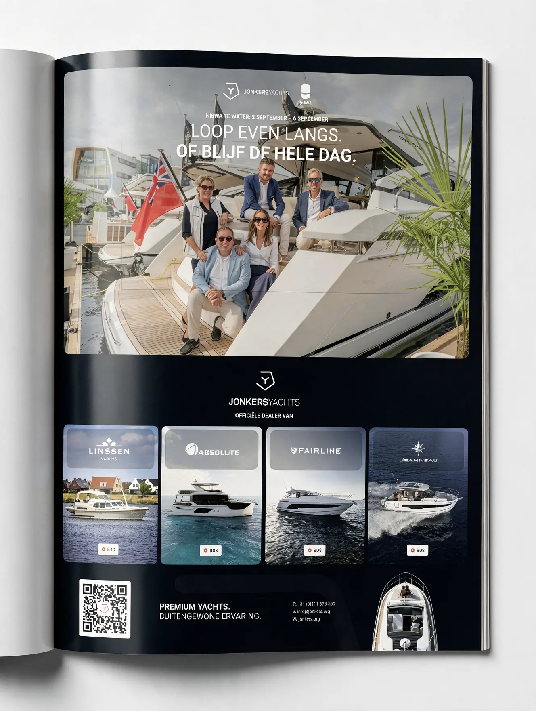
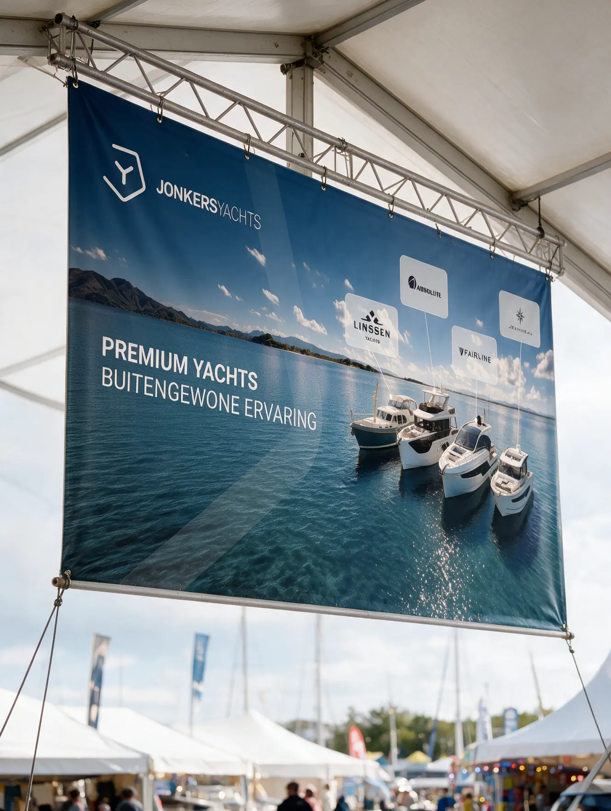
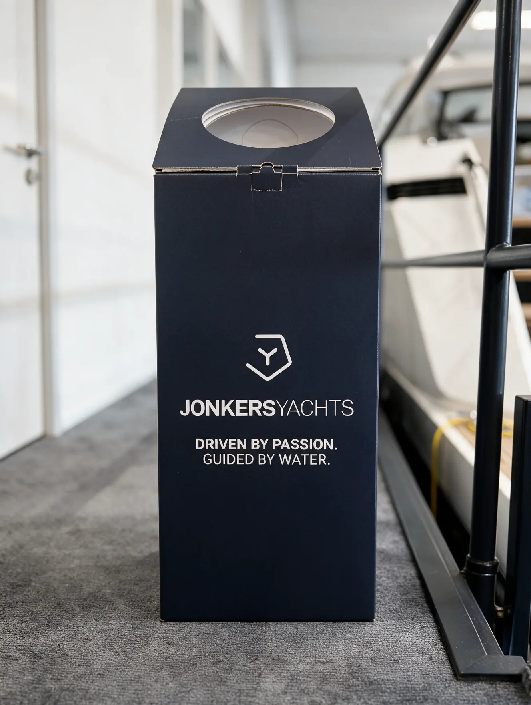
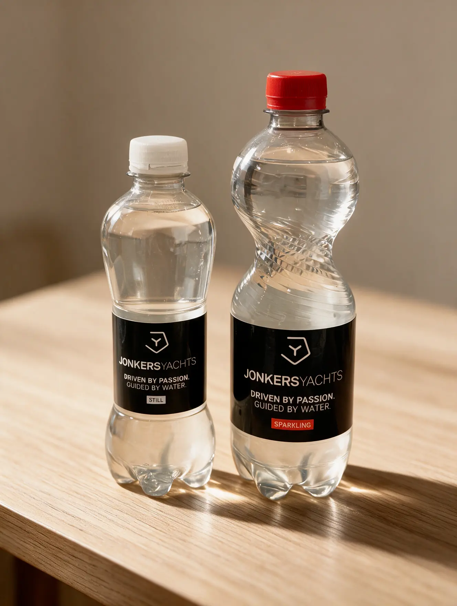
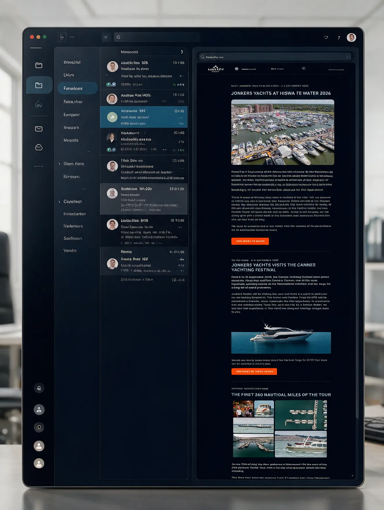

Print, beurs & e-mail, 2026
Jonkers Yachts
Doorlopend ontwerpwerk voor een premium jachtdealer: elke maand een advertentie in twee magazines, het materiaal voor de beursstand op de HISWA, en de e-mailtemplates voor de nieuwsbrief.
- RolAdvertenties, beursmateriaal en e-mail
- Jaar2026, doorlopend
- TypePrint, beurs en e-mail
- ToolsPhotoshop · Figma · Illustrator · Tabular





Aanpak
- Eén vaste opzet voor de maandelijkse advertentie, zodat elke maand een ander evenement en model erin kan zonder dat de pagina opnieuw bedacht hoeft te worden.
- Een doorlopende, donkere pagina als drager, zodat het beeld het werk doet en de tekst nooit met de foto’s concurreert.
- Een duidelijke hiërarchie van boven naar beneden: datum, evenement, uitnodiging, actie, en daarna pas de dealerlogo’s.
- De registratie-CTA als lichte kaart over de foto heen, met QR-code. Het enige element dat visueel uit de pagina stapt.
- Een voet met dealerlogo’s en contactgegevens die op elke uiting van de campagne herbruikbaar is.
- Voor de HISWA dezelfde opmaak doorgezet naar de stand: een spandoek boven de stand, waterflesjes met eigen etiket en een statiegeldbak voor de lege flesjes.
- E-mailtemplates in dezelfde opbouw, zodat een nieuwsbrief dezelfde volgorde aanhoudt als een advertentie en per mailing alleen gevuld hoeft te worden.
Resultaat
Er staat nu één opzet die over drie kanalen heen werkt: print, beurs en e-mail. Elke maand verschijnt er een nieuwe advertentie in twee magazines, en het beursmateriaal en de nieuwsbrief komen uit hetzelfde stramien.
Verder kijken
Al het werk